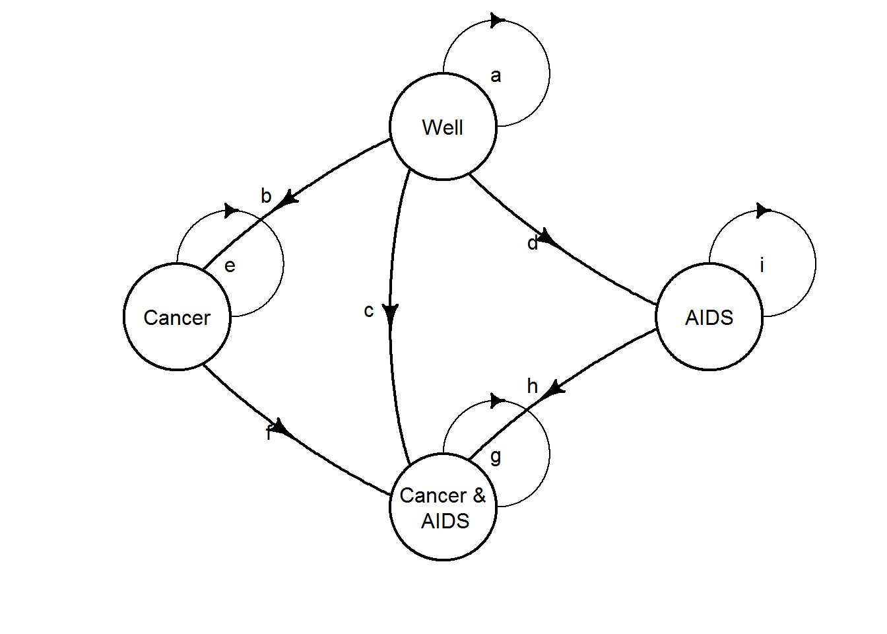

Chapter 6 Markov Models
Introduction
6.1 Standard Matrix Formulation
6.2 Simulation
6.2.0.1 1. A simple decision tree
This example is taken from (???).
The problem is concerned with a competing risk cancer and AIDS decision tree.
We will assume discrete time of single years.
An individual starts in the Well state.
They can transition into Dead, Cancer & AIDS, Cancer, AIDS or remain in the Well state.
Define the transition probabilities:
- Die from other causes: \(\delta_0 = 0.001182\)
- Die from recurent prostate cancer: \(\delta_c = 0.025\)
- Die from AIDS: \(\delta_a = 0.080\)
- Cancer recurs: \(\beta_c = 0.0027\)
- Develop AIDS: \(\beta_a = 0.0083\)
Each state has an associated utility or benefit (quality factor in (???)) accrued by spending one cycle in each state. Define the state utilities:
Well: \(R_w=\) 1.0Cancer: \(R_c=\) 0.60AIDS: \(R_a=\) 0.50Cancer & AIDS: \(R_{ca}=\) 0.30Dead: \(R_d=\) 0
Note that we will not include discounting.
C1. Define a (single year) decision tree and calculate the expected quality-adjusted value.
6.2.0.2 2. Markov-cycle tree
A Markov-cycle tree was introduced by (???) and is a representation of a Markov process in which the possible events taking place during each cycle are represented by a probability tree. This is one way of simplifying determining probabilities from multiple paths.
The diagram for the Markov-cycle tree of the example in (???) is given below (note that the order of the states is different on the left-hand side and right-hand side).

The terminal state are now root or source states, meaning the process returns to the left-hand side to be repeated.
C2. Extend the model of C1 for multiple cycles and thus create a Markov-cycle tree. Calculate the mean quality-adjusted lifetime of 90.473.
6.2.0.3 3. One-cycle Markov-cycle tree
We can rearrange the Markov-cycle tree to closer resemble a Markov model by collapsing the branches into a single cycle and simply combining the probabilities.
In the below figure
- The numbers above each branch are the one-cycle transition probabilities
- The numbers pointing at nodes and names are the mean quality-adjusted durations accrued through \(n\) cycles.
- The numbers in brackets are the mean quality-adjusted durations at the start of the cycle.
So for the below figure, the right-most numbers are the mean quality-adjusted durations for cycle 2, the left-most numbers are the mean quality-adjusted durations for cycle 3 and the numbers in brackets are the mean quality-adjusted durations for cycle 1. (???) steps through this calculation in detail.

C3. Modify the model of C2 to create a one-cycle Markov-cycle tree. Calculate the mean quality-adjusted lifetime.
6.2.0.4 4. Discrete-time Markov model
Clearly, the Markov-cycle tree can also be represented as a discrete-time Markov model. The transition probabilities can be calculated by combining relevant path probabilities from the decision tree as done for the one-cycle Markov-cycle tree. The model is shown below (note that death is not shows for simplicity).

C4. Create the equivalent discrete-time Markov model to the one-cycle Markov-cycle tree. Calculate cumulative proportion of patient cycles in each state and take product with health utilities for each respectively to obtain the mean quality-adjusted lifetime.
6.2.0.5 5. Roll back Markov-cycle tree
A neat strength is that we can calculate the mean quality-adjusted lifetime using the one-cycle Markov-cycle tree representation without calculating the cumulative proportion of time of patient cycles in each health state. This is done by rolling back using the recursive equation (value iteration):
\[ V_n(i) = R(i) + \sum_j p_{ij} V_{n-1}(j) \] where \(V_n(i)\) are the values at node \(i\) at step \(n\), in our case the mean quality-adjusted lifetime.
C5. Calculate the mean quality-adjusted lifetime using the one-cycle Markov-cycle tree and value iteration.
6.2.0.6 6. (BONUS CHALLENGE): Roll back stochastic tree
So far we have only considered discrete time. The Markov-cycle tree representation can be extended to continuous time as a stochastic tree (see (???) for details). Probabilities are now replaced by rates. This change is represented by zigzag lines in the diagrams. This is clearly a more compact representation.
We can calculate mean quality-adjusted lifetime in an analogous way to the discrete-time case by rolling back using the recursive equation:
\[ V(S) = \frac{R(i)}{\sum_j \lambda_j} + \sum_j p_j V(S_j) \] The new model diagram is given below.

The rates for state transitions are:
Cancer: \(\lambda_c = 0.03250\)/yearAIDS: \(\lambda_a = 0.10\)/yearDead from Cancer: \(\mu_c = 0.3081\)/yearDead from AIDS: \(\mu_a = 0.9970\)/yearDead other: \(\mu_o = 0.014191\)/year
C6. Create the stochastic tree model and calculate the mean quality-adjusted lifetime using value iteration.
6.2.1 References
Load supporting packages.
##
## Attaching package: 'purrr'## The following object is masked from 'package:heemod':
##
## modify6.2.1.1 C1. A simple decision tree
Define the separate monthly transition probabilities.
and the utilities of being in each state.
Note that the order of states is dead, cancer & AIDS, cancer, AIDS, well.
Define decision trees in terms of the structure, values and probabilities.
We’ll use the tribble function just because it allows us to specify a matrix by rows rather than columns.
library(tibble)
tree_probs <- list()
# unique state outcomes each branch
tree_probs$well <-
tribble(~rowname, ~dead, ~ndead, ~recurc, ~ncancer, ~CA, ~cancer, ~AIDS, ~well,
"well0", delta0,1-delta0,NA, NA, NA, NA, NA, NA,
"ndead", NA, NA, betac, 1-betac, NA, NA, NA, NA,
"recurc", NA, NA, NA, NA, betaa,1-betaa, NA, NA,
"ncancer", NA, NA, NA, NA, NA, NA, betaa, 1-betaa) %>%
column_to_rownames()
tree_probs$cancer <-
tribble(~rowname, ~dead, ~ndead, ~diec, ~survc, ~CA, ~cancer,
"cancer0",delta0,1-delta0,NA, NA, NA, NA,
"ndead", NA, NA, deltac,1-deltac,NA, NA,
"survc", NA, NA, NA, NA, betaa,1-betaa) %>%
column_to_rownames()
tree_probs$AIDS <-
tribble(~rowname,~dead, ~ndead, ~diea, ~surva, ~CA, ~AIDS,
"AIDS0", delta0,1-delta0,NA, NA, NA, NA,
"ndead", NA, NA, deltaa,1-deltaa,NA, NA,
"surva", NA, NA, NA, NA, betac,1-betac) %>%
column_to_rownames()
tree_probs$CA <-
tribble(~rowname,~dead, ~ndead, ~diec, ~survc, ~diea, ~CA,
"CA0", delta0,1-delta0,NA, NA, NA, NA,
"ndead", NA, NA, deltac,1-deltac,NA, NA,
"survc", NA, NA, NA, NA, deltaa,1-deltaa) %>%
column_to_rownames()
tree_probs$dead <- 1
tree_probs## $well
## dead ndead recurc ncancer CA cancer AIDS well
## well0 0.001182 0.998818 NA NA NA NA NA NA
## ndead NA NA 0.0027 0.9973 NA NA NA NA
## recurc NA NA NA NA 0.0083 0.9917 NA NA
## ncancer NA NA NA NA NA NA 0.0083 0.9917
##
## $cancer
## dead ndead diec survc CA cancer
## cancer0 0.001182 0.998818 NA NA NA NA
## ndead NA NA 0.025 0.975 NA NA
## survc NA NA NA NA 0.0083 0.9917
##
## $AIDS
## dead ndead diea surva CA AIDS
## AIDS0 0.001182 0.998818 NA NA NA NA
## ndead NA NA 0.08 0.92 NA NA
## surva NA NA NA NA 0.0027 0.9973
##
## $CA
## dead ndead diec survc diea CA
## CA0 0.001182 0.998818 NA NA NA NA
## ndead NA NA 0.025 0.975 NA NA
## survc NA NA NA NA 0.08 0.92
##
## $dead
## [1] 1tree_vals <- list()
tree_vals$well <-
tribble(~rowname, ~dead, ~ndead, ~cancer, ~ncancer, ~CA, ~CnotA, ~AIDS, ~well,
"well0", 0,0,0,0,0,0,0,0,
"ndead", 0,0,0,0,0,0,0,0,
"cancer", 0,0,0,0,0.3,0.6,0,0,
"ncancer", 0,0,0,0,0,0,0.5,1) %>%
column_to_rownames()
tree_vals$cancer <-
tribble(~rowname, ~dead, ~ndead, ~cancer, ~ncancer, ~CA, ~CnotA, ~AIDS, ~well,
"well", 0,0,0,0,0,0,0,0,
"ndead", 0,0,0,0,0,0,0,0,
"cancer", 0,0,0,0,0.3,0.6,0,0,
"ncancer", 0,0,0,0,0,0,0.5,1) %>%
column_to_rownames()
tree_vals$AIDS <-
tribble(~rowname, ~dead, ~ndead, ~cancer, ~ncancer, ~CA, ~CnotA, ~AIDS, ~well,
"well", 0,0,0,0,0,0,0,0,
"ndead", 0,0,0,0,0,0,0,0,
"cancer", 0,0,0,0,0.3,0.6,0,0,
"ncancer", 0,0,0,0,0,0,0.5,1) %>%
column_to_rownames()
tree_vals$CA <-
tribble(~rowname, ~dead, ~ndead, ~cancer, ~ncancer, ~CA, ~CnotA, ~AIDS, ~well,
"well", 0,0,0,0,0,0,0,0,
"ndead", 0,0,0,0,0,0,0,0,
"cancer", 0,0,0,0,0.3,0.6,0,0,
"ncancer", 0,0,0,0,0,0,0.5,1) %>%
column_to_rownames()6.2.1.2 C2. Extend C1 for multiple cycles
Assuming a binomial tree we can forward simulate for a synthetic cohort. This is a brute force approach and is potentially time-consuming.
cohort <- list()
n_cohort <- 1000
death_states <- c("diea", "diec", "dead")
for (i in seq_len(n_cohort)) {
traj_s <- NULL
traj_u <- NULL
state_name <- "well"
while (!state_name %in% death_states) {
p <- tree_probs[[state_name]]
binp <- p[state_name, !is.na(p[state_name, ])] #partial match
while (nrow(binp) > 0) {
state_name <-
if (runif(1) < binp[1]) names(binp)[1] else names(binp)[2]
binp <- p[state_name == rownames(p), !is.na(p[state_name, ])]
}
traj_s <- c(traj_s, state_name)
traj_u <- c(traj_u, sutils[state_name])
}
cohort[[i]] <- traj_u
}An example trajectory
## well well well well well well well well well well well well well well well
## 1.0 1.0 1.0 1.0 1.0 1.0 1.0 1.0 1.0 1.0 1.0 1.0 1.0 1.0 1.0
## well well well well well well well well well well well well well well well
## 1.0 1.0 1.0 1.0 1.0 1.0 1.0 1.0 1.0 1.0 1.0 1.0 1.0 1.0 1.0
## well well well well well well well well well well well well well well well
## 1.0 1.0 1.0 1.0 1.0 1.0 1.0 1.0 1.0 1.0 1.0 1.0 1.0 1.0 1.0
## well well well well well well well well well well well well well well well
## 1.0 1.0 1.0 1.0 1.0 1.0 1.0 1.0 1.0 1.0 1.0 1.0 1.0 1.0 1.0
## well well well well well well well well well well well well well well well
## 1.0 1.0 1.0 1.0 1.0 1.0 1.0 1.0 1.0 1.0 1.0 1.0 1.0 1.0 1.0
## well well well well well well well well well well well well well well well
## 1.0 1.0 1.0 1.0 1.0 1.0 1.0 1.0 1.0 1.0 1.0 1.0 1.0 1.0 1.0
## well well well well well well well well well well well well well well well
## 1.0 1.0 1.0 1.0 1.0 1.0 1.0 1.0 1.0 1.0 1.0 1.0 1.0 1.0 1.0
## well well well well well well well well well well well well well well well
## 1.0 1.0 1.0 1.0 1.0 1.0 1.0 1.0 1.0 1.0 1.0 1.0 1.0 1.0 1.0
## well well well well well well well well well well well well AIDS AIDS AIDS
## 1.0 1.0 1.0 1.0 1.0 1.0 1.0 1.0 1.0 1.0 1.0 1.0 0.5 0.5 0.5
## AIDS AIDS AIDS AIDS AIDS AIDS AIDS AIDS AIDS AIDS AIDS AIDS <NA>
## 0.5 0.5 0.5 0.5 0.5 0.5 0.5 0.5 0.5 0.5 0.5 0.5 NAThe mean summary statistics should be close to the true expected value. However, it appears to be pretty noisy and even for fairly large values (in terms of run time) it can be off by one or two.
## [1] 90.93966.2.1.3 C3. Markov-cycle tree
Given the following transition matrix
\[ \tiny \left( \begin{matrix} 1 & 0 & 0 & 0 & 0\\ (1 - \delta_0)\delta_c + (1-\delta_0)(1-\delta_c)\delta_a & (1-\delta_0)(1-\delta_c(1-\delta_a) & 0 & 0 & 0\\ \delta_0 + (1-\delta_0)\delta_c & (1-\delta_0)(1-\delta_c)\beta_a & (1-\delta_0)(1-\delta_c)(1-\beta_a) & 0 & 0\\ \delta_0 + (1-\delta_0)\delta_a & (1-\delta_0)\beta_c(1-\delta_a) & 0 & (1-\delta_0)(1-\beta_c)(1-\delta_a) & 0\\ \delta_0 & (1-\delta_0)\beta_c\beta_a & (1-\delta_0)\beta_c(1-\beta_a) & (1-\delta_0)(1-\beta_c)\beta_a & (1-\delta_0)(1-\beta_c)(1-\beta_a) \end{matrix} \right) \]
Then define the transition matrix object
p <- list()
p$dead <- c(1,0,0,0,0)
p$CA <-
c(delta0 + (1-delta0)*deltac + (1-delta0)*(1-deltac)*deltaa, (1-delta0)*(1-deltac)*(1-deltaa),0,0,0)
p$cancer <-
c(delta0 + (1-delta0)*deltac, (1-delta0)*(1-deltac)*betaa, (1-delta0)*(1-deltac)*(1-betaa),0,0)
p$AIDS <-
c(delta0 + (1-delta0)*deltaa, (1-delta0)*betac*(1-deltaa), 0, (1-delta0)*(1-betac)*(1-deltaa), 0)
p$well <-
c(delta0, (1-delta0)*betac*betaa, (1-delta0)*betac*(1-betaa), (1-delta0)*(1-betac)*betaa,
(1-delta0)*(1-betac)*(1-betaa))
trans <- do.call(rbind, p)Combine the tree data all together into a single list using a function.
create_tree <- function(trans, utils) {
if (!all(rowSums(trans) == 1)) stop("probabilities don't sum to one")
if (nrow(trans) != ncol(trans)) stop("not square matrix")
if (nrow(trans) != length(utils)) stop("utils length doesnt match transition matrix dimensions")
colnames(trans) <- rownames(trans)
names(utils) <- rownames(trans)
list(trans = trans,
utils = utils)
}
my_tree <- create_tree(trans, sutils)Check the input data.
## List of 2
## $ trans: num [1:5, 1:5] 1 0.10406 0.02615 0.08109 0.00118 ...
## ..- attr(*, "dimnames")=List of 2
## .. ..$ : chr [1:5] "dead" "CA" "cancer" "AIDS" ...
## .. ..$ : chr [1:5] "dead" "CA" "cancer" "AIDS" ...
## $ utils: Named num [1:5] 0 0.3 0.6 0.5 1
## ..- attr(*, "names")= chr [1:5] "dead" "CA" "cancer" "AIDS" ...| dead | CA | cancer | AIDS | well | |
|---|---|---|---|---|---|
| dead | 1.000 | 0.000 | 0.000 | 0.000 | 0.000 |
| CA | 0.104 | 0.896 | 0.000 | 0.000 | 0.000 |
| cancer | 0.026 | 0.008 | 0.966 | 0.000 | 0.000 |
| AIDS | 0.081 | 0.002 | 0.000 | 0.916 | 0.000 |
| well | 0.001 | 0.000 | 0.003 | 0.008 | 0.988 |
Now we’re ready to do the forward cycle. Basically, using the same approach as above for the separate probabilities, we simulate individuals and then take an average.
cohort <- list()
n_cohort <- 1000
p <- my_tree$trans
for (i in seq_len(n_cohort)) {
traj_s <- NULL
traj_u <- NULL
state_name <- "well"
while (state_name != "dead") {
res <- rmultinom(n = 1, size = 1, prob = p[state_name, ])
state_name <- rownames(res)[res[,1] == 1]
traj_s <- c(traj_s, state_name)
traj_u <- c(traj_u, sutils[state_name])
}
cohort[[i]] <- traj_u
}Here’s an example trajectory.
## well well well well well well well well well well well well well well well
## 1.0 1.0 1.0 1.0 1.0 1.0 1.0 1.0 1.0 1.0 1.0 1.0 1.0 1.0 1.0
## well well well well well well well well well well well well well well well
## 1.0 1.0 1.0 1.0 1.0 1.0 1.0 1.0 1.0 1.0 1.0 1.0 1.0 1.0 1.0
## well well well well well well well well well well well well well well well
## 1.0 1.0 1.0 1.0 1.0 1.0 1.0 1.0 1.0 1.0 1.0 1.0 1.0 1.0 1.0
## well well well well well well well well well well well well well well well
## 1.0 1.0 1.0 1.0 1.0 1.0 1.0 1.0 1.0 1.0 1.0 1.0 1.0 1.0 1.0
## well well well well well well well well well well well well well well well
## 1.0 1.0 1.0 1.0 1.0 1.0 1.0 1.0 1.0 1.0 1.0 1.0 1.0 1.0 1.0
## well well well well well well well well well well well well well well well
## 1.0 1.0 1.0 1.0 1.0 1.0 1.0 1.0 1.0 1.0 1.0 1.0 1.0 1.0 1.0
## well well well well well well well well well well well well well well well
## 1.0 1.0 1.0 1.0 1.0 1.0 1.0 1.0 1.0 1.0 1.0 1.0 1.0 1.0 1.0
## well well well well well well well well well well well well well well well
## 1.0 1.0 1.0 1.0 1.0 1.0 1.0 1.0 1.0 1.0 1.0 1.0 1.0 1.0 1.0
## well well well well well well well well well well well well well well well
## 1.0 1.0 1.0 1.0 1.0 1.0 1.0 1.0 1.0 1.0 1.0 1.0 1.0 1.0 1.0
## well well well well well well well well well well well well well well well
## 1.0 1.0 1.0 1.0 1.0 1.0 1.0 1.0 1.0 1.0 1.0 1.0 1.0 1.0 1.0
## well well well well well well well well well well well well well well well
## 1.0 1.0 1.0 1.0 1.0 1.0 1.0 1.0 1.0 1.0 1.0 1.0 1.0 1.0 1.0
## well well well well well well well well well well well well well well well
## 1.0 1.0 1.0 1.0 1.0 1.0 1.0 1.0 1.0 1.0 1.0 1.0 1.0 1.0 1.0
## well well well well well well well well well well well well well well well
## 1.0 1.0 1.0 1.0 1.0 1.0 1.0 1.0 1.0 1.0 1.0 1.0 1.0 1.0 1.0
## well well well well well well well well well well well well well well well
## 1.0 1.0 1.0 1.0 1.0 1.0 1.0 1.0 1.0 1.0 1.0 1.0 1.0 1.0 1.0
## well well AIDS AIDS AIDS dead
## 1.0 1.0 0.5 0.5 0.5 0.0The expected value is
## [1] 92.57416.2.1.4 C4. Regular Markov model
After initialising values for the calculation, for each cycle the probability of being in each of the states is calculated using the transition matrix and the previous cycle state occupancy probabilities. Similarly, the utilities associated with being in each state are calculated for each cycle.
run_model <- function(tree,
probs,
n_cycles = 1000) {
if (!is.matrix(probs))
probs <- matrix(probs, nrow = 1)
qalys <- NULL
costs <- NULL
for (i in seq_len(n_cycles)) {
probs <- rbind(probs, probs[i, ] %*% tree$trans)
qalys <- rbind(qalys, probs[i, ]*tree$utils)
}
list(probs = probs,
qalys = qalys)
}By summing over all cycles we obtain the total utilities for each state.
The total sum is the expected QALYs value for an individual starting in state well until dead.
## dead CA cancer AIDS well
## 0.0000000 0.2134372 3.8587613 4.0724888 82.3270612The total expected QALYs are therefore
## [1] 90.471756.2.1.5 C5. Roll back Markov-cycle tree
Let’s write a recursive function to do the value iteration.
Because this is more general than a simple binary tree we need to sum over the number of to-nodes at each step.
Also, we need to limit the number of recursions since this function would run until we get a stack overflow error.
In the original paper, Hazen (1992) gives a table for 1, 2, 3, 10, 100, 1000 cylces to show convergence.
Here we inlude a limit argument which exits the function call after a certain tree depth is reached.
value_iteration <- function(n, # starting node number
R, # `reward` (utility/quality factor)
p, # transition probabilty matrix
cycle, # exits recursion after limit tree depth
limit = 100) {
## sub NAs so returns for absorbing state
p[p == 0] <- NA
p[p == 1] <- NA
to_node <- which(!is.na(p[n, ]))
if (length(to_node) == 0 || cycle == limit) {
return(R[n])
}
else {
Vsum <- 0
for (i in seq_along(to_node)) {
Vsum <- Vsum + p[n, to_node[i]]*value_iteration(to_node[i], R, p,
cycle = cycle + 1, limit = limit)
}
return(R[n] + Vsum)
}
}If we run this for the cycles in Table 2 in Hazen (1992), omitting the 1000 cycle because it takes too long to run, then we get the following same values.
map_dbl(c(1,2,3,10,100),
function(x) value_iteration(n = 5,
R = my_tree$utils, p = my_tree$trans,
cycle = 1, limit = x))## [1] 1.000000 1.993599 2.980485 9.680872 63.018813The problem with this representation is that it grows exponenitally with the number of cycles. One way to speed things up is to do some of the calculation up-front so that we only do it once. We can achieve this by nesting a second function inside of the initial as follows.
value_iteration2 <- function(n, # starting node number
R, # `reward` (utility/quality factor)
p, # transition probabilty matrix
cycle, # exits recursion after limit tree depth
limit = 100) {
## sub NAs so returns for absorbing state
p[p == 0] <- NA
p[p == 1] <- NA
to_node <- map(seq(nrow(p)), function(i){ which(!is.na(p[i,])) } )
v_iter <- function(n, cycle) {
if (length(to_node) == 0 || cycle == limit) {
return(R[n])
}
else {
Vsum <- 0
for (i in seq_along(to_node[[n]])) {
Vsum <- Vsum + p[n, to_node[[n]][i]]*v_iter(to_node[[n]][i],cycle = cycle + 1)
}
return(R[n] + Vsum)
}
}
return(v_iter(n, cycle))
}Although we still have the original main problem this does appreciably improve run time.
microbenchmark::microbenchmark(
value_iteration(n = 5,
R = my_tree$utils,
p = my_tree$trans,
cycle = 1, limit = 200),
value_iteration2(n = 5,
R = my_tree$utils,
p = my_tree$trans,
cycle = 1, limit = 200), times = 1)## Unit: seconds
## expr
## value_iteration(n = 5, R = my_tree$utils, p = my_tree$trans, cycle = 1, limit = 200)
## value_iteration2(n = 5, R = my_tree$utils, p = my_tree$trans, cycle = 1, limit = 200)
## min lq mean median uq max neval
## 45.97520 45.97520 45.97520 45.97520 45.97520 45.97520 1
## 18.62193 18.62193 18.62193 18.62193 18.62193 18.62193 1Xie, Yihui. 2015. Dynamic Documents with R and Knitr. 2nd ed. Boca Raton, Florida: Chapman; Hall/CRC. http://yihui.name/knitr/.
———. 2019. Bookdown: Authoring Books and Technical Documents with R Markdown. https://CRAN.R-project.org/package=bookdown.